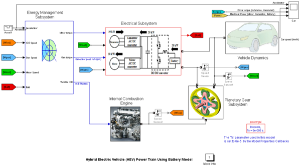

Hybrid Electric Vehicle (HEV) Power Train Using Battery Model
Demonstration of a hybrid electric vehicle (HEV) power train using SimPowerSystems™ and SimDriveline™.
Olivier Tremblay, Louis-A. Dessaint (Ecole de Technologie Superieure).
Contents
Circuit Description
This example shows a multi-domain simulation of a HEV power train based on SimPowerSystems and SimDriveline. The HEV power train is of the series-parallel type, such as the one found in the Toyota Prius car [2]. This HEV has two kinds of motive power sources: an electric motor and an internal combustion engine (ICE), in order to increase the drive train efficiency and reduce air pollution. It combines the advantages of the electric motor drive (no pollution and high available power at low speed) and the advantages of an internal combustion engine (high dynamic performance and low pollution at high speeds).
The Electrical Subsystem is composed of four parts: The electrical motor, the generator, the battery, and the DC/DC converter.
- The electrical motor is a 500 Vdc, 50 kW interior Permanent Magnet Synchronous Machine (PMSM) with the associated drive (based on AC6 blocks of the SimPowerSystems Electric Drives library). This motor has 8 pole and the magnets are buried (salient rotor's type). A flux weakening vector control is used to achieve a maximum motor speed of 6 000 rpm.
- The generator is a 500 Vdc, 2 pole, 30 kW PMSM with the associated drive (based on AC6 blocks of the SimPowerSystems Electric Drives library). A vector control is used to achieve a maximum motor speed of 13000 rpm.
- The battery is a 6.5 Ah, 200 Vdc, 21 kW Nickel-Metal-Hydride battery.
- The DC/DC converter (boost type) is voltage-regulated. The DC/DC converter adapts the low voltage of the battery (200 V) to the DC bus which feeds the AC motor at a voltage of 500 V.
The Planetary Gear Subsystem models the power split device. It uses a planetary device, which transmits the mechanical motive force from the engine, the motor and the generator by allocating and combining them.
The Internal Combustion Engine subsystem models a 57 kW @ 6000 rpm gasoline fuel engine with speed governor. The throttle input signal lies between zero and one and specifies the torque demanded from the engine as a fraction of the maximum possible torque. This signal also indirectly controls the engine speed. The engine model does not include air-fuel combustion dynamics.
The Vehicle Dynamics subsystem models all the mechanical parts of the vehicle:
- The single reduction gear reduces the motor's speed and increases the torque.
- The differential splits the input torque in two equal torques for wheels.
- The tires dynamics represent the force applied to the ground.
- The vehicle dynamics represent the motion influence on the overall system.
- The viscous friction models all the losses of the mechanical system.
The Energy Management Subsystem (EMS) determines the reference signals for the electric motor drive, the electric generator drive and the internal combustion engine in order to distribute accurately the power from these three sources. These signals are calculated using mainly the position of the accelerator, which is between -100% and 100%, and the measured HEV speed. Note that a negative accelerator position represents a positive brake position.
- The Battery management system maintains the State-Of-Charge (SOC) between 40 and 80%. Also, it prevents against voltage collapse by controlling the power required from the battery.
- The Hybrid Management System controls the reference power of the electrical motor by splitting the power demand as a function of the available power of the battery and the generator. The required generator power is achieved by controlling the generator torque and the ICE speed.
There are five main scopes in the model:
- The scope in the Main System named Car shows the accelerator position, the car speed, the drive torque and the power flow.
- The scope in the Electrical Subsystem named PMSM Motor Drive shows the results for the motor drive. You can observe the stator currents ia, the rotor speed and the motor torque (electromagnetic and reference).
- The scope in the Electrical Subsystem named PMSM Generator Drive shows the results for the generator drive. You can observe the stator currents ia, the rotor speed and the motor torque (electromagnetic and reference).
- The scope in the Electrical Subsystem/Electrical measurements shows the voltages (DC/DC converter, DC bus and battery), the currents (motor, generator and battery) and the battery SOC.
- The scope in the Energy Management Subsystem/Power Management System shows the power references applied to the electrical components.
Demonstration
The demonstration shows different operating modes of the HEV over one complete cycle: accelerating, cruising, recharging the battery while accelerating and regenerative braking. Start the simulation. It should run for about one minute when you use the accelerator mode. You can see that the HEV speed starts from 0 km/h and reaches 73 km/h at 14 s, and finally decreases to 61 km/h at 16 s. This result is obtained by maintaining the accelerator pedal constant to 70% for the first 4 s, and to 10% for the next 4 s when the pedal is released, then to 85% when the pedal is pushed again for 5 s and finally sets to -70% (braking) until the end of the simulation. Open the scope “Car” in the main system. The following explains what happens when the HEV is moving:
- At t = 0 s, the HEV is stopped and the driver pushes the accelerator pedal to 70%. As long as the required power is lower than 12 kW, the HEV moves using only the electric motor power fed by the battery. The generator and the ICE provide no power.
- At t = 1.4 s, the required power becomes greater than 12 kW triggering the hybrid mode. In this case, the HEV power comes from the ICE and the battery (via the motor). The motor is fed by the battery and also by the generator. In the planetary gear, the ICE is connected to the carrier gear, the generator to the sun gear and the motor and transmission to the ring gear. The ICE power is split to the sun and the ring. This operating mode corresponds to acceleration.
- At t = 4 s, the accelerator pedal is released to 10% (cruising mode). The ICE cannot decrease its power instantaneously; therefore the battery absorbs the generator power in order to reduce the required torque.
- At t = 4.4 s, the generator is completely stopped. The required electrical power is only provided by the battery.
- At t = 8 s, the accelerator pedal is pushed to 85%. The ICE is restarted to provide the extra required power. The total electrical power (generator and battery) cannot reach the required power due to the generator-ICE assembly response time. Hence the measured drive torque is not equal to the reference.
- At t = 8.7 s, the measured torque reaches the reference. The generator provides the maximum power.
- At t = 10 s, the battery SOC becomes lower than 40% (it was initialised to 41.53 % at the beginning of the simulation) therefore the battery needs to be recharged. The generator shares its power between the battery and the motor. You can observe that the battery power becomes negative. It means that the battery receives power from the generator and recharges while the HEV is accelerating. At this moment, the required torque cannot be met anymore because the electric motor reduces its power demand to recharge the battery.
- At t = 13 s, the accelerator pedal is set to -70% (regenerative braking is simulated). This is done by switching off the generator (the generator power takes 0.5 s to decrease to zero) and by ordering the motor to act as a generator driven by the vehicle’s wheels. The kinetic energy of the HEV is transformed as electrical energy which is stored in the battery. For this pedal position, the required torque of -250 Nm cannot be reached because the battery can only absorb 21 kW of energy.
- At t = 13.5 s, the generator power is completely stopped.
Some interesting observations can be made in each scope. During the whole simulation, you can observe the DC bus voltage of the electrical system well regulated at 500 V. In the planetary gear subsystem, you can observe that the Willis relation is equal to -2.6 and the power law of the planetary gear is equal to 0 during the whole simulation.
Notes
1. The power system has been discretized with a 60 us time step.
2. In order to reduce the number of points stored in the scope memory, a decimation factor of 10 is used.
3. The AC6 blocks of SimPowerSystems (representing the motor and the generator) and the DC/DC converter use the average value option of the detailed level. This option allows to use a larger simulation time step.
References
1. Animation of a full hybrid car at: http://www.fueleconomy.gov/feg/hybridtech.shtml
2. Toyota Motor Corporation, Public Affair Division, “Toyota Hybrid System THSII”, may 2003, http://www.toyota.co.jp/en/tech/environment/ths2/index.html
3. B. Jeanneret, R. Trigui, F.Badin, F.Harel, “New Hybrid concept simulation tools, evaluation on the Toyota Prius car”, The 16Th International electric vehicle symposium, October 13-16, 1999 – Beijing – China.